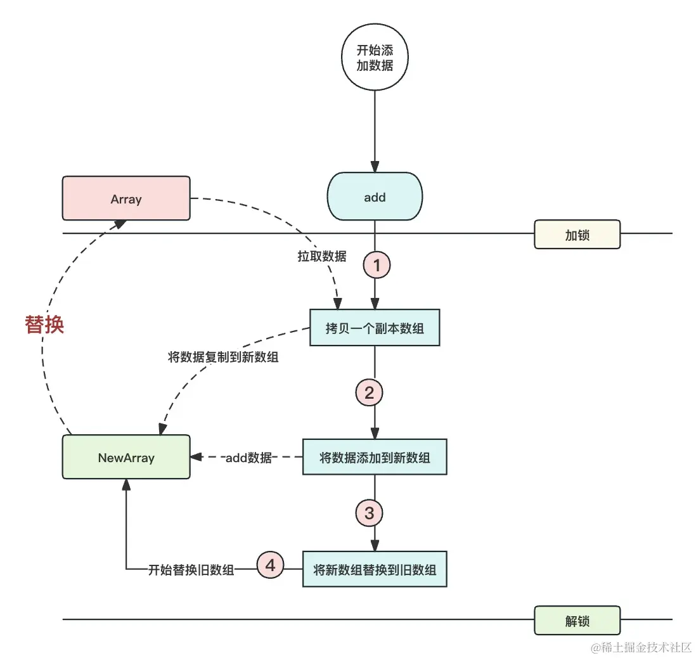

- 01 多线程初阶：解谜多线程世界.md.html
- 02 线程池掌故：管理并发的秘籍.md.html
- 03 锁的奥秘：synchronized 的秘密.md.html
- 04 锁的奥秘：Lock 接口的秘密.md.html
- 05 控制并发流程，并发的巧妙编织.md.html
- 06 ThreadLocal 之珍宝：线程的隐秘宝库.md.html
- 07 CAS：比肩而立的原子魔法.md.html
- 08 容器的魔力：并发世界的宝库.md.html
- 09 结果如何？线程的秘密告白.md.html
- 10 AQS：保证并发安全的终极奥秘（上）.md.html
- 11 AQS：保证并发安全的终极奥秘（中）.md.html
- 12 AQS：保证并发安全的终极奥秘（下）.md.html
- 捐赠
08 容器的魔力：并发世界的宝库
我们在前文学习了如何保证对单个对象并发操作的并发安全性，本章节我们将学习如何对一个容器类内的元素并发操作，保证并发安全性。
首先我们需要知道传统的容器是不支持多线程操作的，譬如 ArrayList、LinkedList、HashSet、TreeSet、HashMap、TreeMap 等，它们在使用中因为并发安全问题会出现诸如数据丢失、报错、死循环等诸多问题。
在 Java 1.5 之前，如果想要使用线程安全的并发容器，那么有以下几个选择：
Vector：线程安全的容器。它的具体使用方式与 ArrayList 相似，其内部实现的原理是在方法层面上增加synchronized来实现线程安全。我们简单看一下源码：
public synchronized boolean add(E e) {
...
}
Hashtable：一个线程安全的 KV 结构的数据。操作方式与 HashMap 相似，其内部原理也是在方法层面上增加synchronized来实现线程安全。我们简单看一下源码：
public synchronized V put(K key, V value) {
.....
}
synchronizedList：在介绍锁的那一章节专门对于 synchronized 有过介绍，我们说过为了使锁粒度更加的精确，推荐将 synchronized 放到需要的代码块中，而不是放到整个方法定义上，于是有了以下的包装类。它的具体使用方法如下：
List<String> list = Collections.synchronizedList(new ArrayList<>());
synchronizedList 能够使一个普通的 ArrayList 变为一个线程安全的容器，我们简单结合源码看它是如何实现的，具体实现在 java.util.Collections.SynchronizedCollection：
public boolean add(E e) {
synchronized (mutex) {return c.add(e);}
}
它的实现方式就比 Vector 的实现更加好一点，采用锁代码块的方式来解决，锁的粒度更小了。
相似的实现还有 Map、Set，都可以使用 Collections.synchronizedXXX 去包装，使其变成一个支持并发安全的类。
上述的几种并发安全容器基本都是采用 synchronized 的方式来实现的，可是 synchronized 实现的方式无论是在方法上还是代码块上，在高并发场景中效率都不太尽如人意。
那么，是否有一种方式能够保障线程安全的前提下，又能够满足性能需求呢？在下文，我将会重点介绍两种并发安全的 集合 和几种常用的 队列。
一、新时代的并发容器
在本文中，我们将对 1.8 中常用的并发容器做一个详细的讲解，包括 ConcurrentHashMap、CopyOnWriteArrayList、线程安全的队列三个方面来学习。
1. ConcurrentHashMap
HashMap 相信大家在日常的开发工作中都使用过，它是一个 KV 数据结构的容器，只限于单线程进行使用，在多线程环境下使用会因为多线程同时扩容的问题产生死循环，从而导致线程堆栈溢出！
具体细节这里我们不做太多的讲解，大家可以去网上以
HashMap CPU100%为关键词去搜一下，网上有大量的讲解。
ConcurrentHashMap 与传统的 HashMap 有以下五个区别：
| 类型 | 实现 | 简介 |
|---|---|---|
| 线程安全性 | HashMap | HashMap 是非线程安全的，多个线程并发访问同一个 HashMap 实例时，需要手动进行并发安全控制或采用其他措施来确保线程安全。 |
| ConcurrentHashMap | ConcurrentHashMap 是线程安全的。它使用分段锁技术，不同的线程可以同时访问不同的分段，只有在写操作时才需要锁定对应的分段，因此它支持高度并发的读操作，同时保证写操作的线程安全。 | |
| 性能 | HashMap | 由于不支持并发操作，所以它不涉及额外的锁同步开销，HashMap 在单线程环境下的性能通常会略高于 ConcurrentHashMap。 |
| ConcurrentHashMap | 虽然在高并发情况下需要处理锁，但由于它采用了分段锁机制，因此能够更好地处理多线程并发，在多线程环境下通常具有更好的性能。 | |
| 迭代器 | HashMap | HashMap 的迭代器不是线程安全的，如果在迭代期间对 HashMap 进行结构性修改，可能会导致 ConcurrentModificationException 异常。 |
| ConcurrentHashMap | ConcurrentHashMap 的迭代器是弱一致的，允许在迭代期间进行结构性修改，但不保证一定能够看到最新的修改。 | |
| 允许空键值 | HashMap | HashMap 允许存储 null 键和 null 值。 |
| ConcurrentHashMap | ConcurrentHashMap 不允许存储 null 键和 null 值。如果尝试存储 null 键或值，会抛出 NullPointerException。 | |
| 初始容量和负载因子 | HashMap | 可以通过构造函数设置初始容量和负载因子，以控制 HashMap 的大小和性能。 |
| ConcurrentHashMap | 不支持通过构造函数设置初始容量和负载因子，因为它的分段结构会自动扩展和收缩，以适应负载变化。 |
ConcurrentHashMap 的使用方式与 HashMap 很相似，这里给一个简单的示例：
public class NewSyncContainer {
public static void main(String[] args) {
ConcurrentHashMap<String,String> concurrentHashMap = new ConcurrentHashMap<>();
concurrentHashMap.put("1","a");
}
}
ConcurrentHashMap 在 Java 1.8 中是使用 CAS + synchronized 来实现的，是可以保证并发情况下的并发安全的，所以在存在多线程读写 Map 的场景下是推荐使用 ConcurrentHashMap 的。
2. CopyOnWriteArrayList
我们已经学习了关于并发安全的 Map 容器，现在让我们来看一下并发安全的 List 容器。
在开发中，我们经常会使用 ArrayList，但它是线程不安全的。为了创建一个线程安全的 List 集合，我们可以使用 Vector 或者上文提到的 Collections.synchronizedList 方法。然而，正如我们在上文分析的那样，它们实现并发安全的方式是通过对读写添加 synchronized 关键字来实现的。
相比之下，CopyOnWriteArrayList 提供了另一种选择，它在某些场景下可能更为高效。它通过在写入操作时复制整个数组来实现线程安全，这样读取操作不受影响，因此适合读多写少的情况。
CopyOnWriteArrayList 可以简单翻译为“写时复制”，它的特点是在对其进行修改操作（例如添加、删除、更新元素）时，不直接在原始数据上进行操作，而是先创建一个副本（Copy），在副本上进行修改，然后将副本替换原始数据。
这样可以确保并发访问时不会出现数据一致性问题，因为每个线程都在自己的副本上操作，不会影响其他线程的操作。
CopyOnWriteArrayList 的主要优点是读操作非常高效，因为不需要加锁，多个线程可以同时读取数据，而写操作会比较慢，因为需要复制数据。它适用于读多写少的场景，当数据集相对稳定，而写操作较少时，使用 CopyOnWriteArrayList 可以提供较好的性能。
总的来说，CopyOnWriteArrayList 在特定的场景下存在以下的优势：
- 读取性能高效：
CopyOnWriteArrayList在读取操作上非常高效，因为它在进行修改操作时会创建一个新的数组，这意味着读取操作不需要加锁或复制整个数组。 - 迭代安全：
CopyOnWriteArrayList支持并发修改和迭代操作，因为它在迭代时使用的是原始数组的一个快照，所以不会抛出ConcurrentModificationException异常。 - 写入操作不阻塞读取操作： 在向
CopyOnWriteArrayList中添加、删除元素时，不会阻塞正在进行的读取操作，因为修改操作会在一个独立的副本上进行，只有在修改完成后才会将副本赋值给原始数组。 - 适合读多写少的场景： 由于
CopyOnWriteArrayList在修改时需要复制整个数组，所以适合读多写少的场景，如果写操作非常频繁，则性能可能会受到影响。 - 无需手动同步： 与
Vector和Collections.synchronizedList不同，CopyOnWriteArrayList不需要手动同步操作，因为它已经内置了线程安全机制。
CopyOnWriteArrayList 的使用方式与 ArrayList 类似，我们简单学习一下它的使用：
public static void main(String[] args) {
CopyOnWriteArrayList<String> copyOnWriteArrayList = new CopyOnWriteArrayList<>();
copyOnWriteArrayList.add("a");
copyOnWriteArrayList.add("b");
for (String s : copyOnWriteArrayList) {
System.out.println(s);
}
}
可以看下它是如何做到线程安全的，我们简单分析下 add 的源码：
public boolean add(E e) {
//增加锁
final ReentrantLock lock = this.lock;
lock.lock();
try {
Object[] elements = getArray();
int len = elements.length;
// 复制一个集合的副本
Object[] newElements = Arrays.copyOf(elements, len + 1);
// 将要增加的线程追加到副本中
newElements[len] = e;
// 使用副本替换集合
setArray(newElements);
return true;
} finally {
lock.unlock();
}
}
可以看到，CopyOnWriteArrayList 在写的时候会使用 ReentrantLock 加锁，同时复制一个新的数组；将数据写到新的数组后，再将新的数组替换旧的数组，完成写入。不难发现，当我们在写场景多的情况下，CopyOnWriteArrayList 会立即加锁然后复制一个新的数组占用空间，效率反而比 Vector 要慢。
我们简单看一个流程图：

需要注意的是：
- 由于 CopyOnWriteArrayList 的写操作是在副本上进行的，所以如果频繁进行写操作，可能会导致内存消耗较大。
- 由于写操作会导致数据复制，可能不适合大数据集的情况。
- 由于 CopyOnWriteArrayList 在写的时候操作的是副本对象，所以只能保证最终一致性，无法保证强一致性。
3. 并发队列
大多数的开发者对于队列的认知是类似于 Kafka、RabbitMQ 等一些“高大上”的消息队列上，对于 Java 内的队列却是一知半解。熟练运用 Java 内的队列，将会在日后的开发工作中对于需要多线程的开发场景处理得游刃有余。
在并发编程中，无论如何都绕不过的一个坎就是 队列。如果要实现一个线程安全的队列有两种方式，一种是使用阻塞算法，另外一种是非阻塞算法。
- 使用
阻塞算法的队列可以使用一把锁（出队和入队使用一把锁）或者使用两把锁（出队和入队使用不同的锁）等方式来实现。 非阻塞的实现方式则可以使用循环 CAS 的方式来实现，在后续我们将会针对阻塞队列和非阻塞队列两个大类来展开介绍。
| 类型 | 实现 | 简介 |
|---|---|---|
| 阻塞队列 | ArrayBlockingQueue | 一个由数组结构组成的有界阻塞队列 |
| LinkedBlockingQueue | 一个由链表结构组成的有界阻塞队列 | |
| PriorityBlockingQueue | 一个支持优先级排序的无界阻塞队列 | |
| SynchronousQueue | 一个不存储元素的阻塞队列 | |
| DelayQueue | 一个使用优先级队列实现的无界阻塞队列 | |
| 非阻塞队列 | ConcurrentLinkedQueue | 一个基于链接节点的线程安全的无界队列 |
从上文的图表中，可以看到一个陌生的名词：有界和无界。所谓的有界队列就是这个队列是有一个最大长度的，简单来说就是通过不断的写入数据能够把队列写满的！而无界队列的长度可以认为是无限大，理论上只要内存够大，无界队列就无法被塞满。
了解了有界和无界的概念后，我们针对阻塞队列和非阻塞队列做一个详细的讲解。
（1）阻塞队列
阻塞队列是具有阻塞功能的队列。
从名字可以看出，首先它具有队列的特性（先进先出），其次它具有阻塞的能力。当存在数据的时候消费者可以获取到数据，当不存在数据的时候消费者阻塞等待。当队列不满的时候生产者可以向队列写入数据，当队列满的时候，生产者停止写入并进入阻塞状态。
既然是队列，就一定有生产数据和消费数据的 API。这里将以 ArrayBlockingQueue 为例讲解基础的 API，BlockingQueue 的 API 种类大致可以分为 3 组。
| 类型 | API名称 | 简介 |
|---|---|---|
| 会产生阻塞的API | put() | 插入元素，如果队列已满，则进入阻塞状态，直到队列存在空闲位置。 |
| take() | 获取并溢出队列头节点，如果队列为空则进入阻塞状态，直到队列存在数据。 | |
| 会产生异常的API | add() | 向队列中添加数据，当队列满了之后抛出异常。 |
| remove() | 删除队列的头节点，当队列为空的时候，抛出异常。 | |
| element() | 获取但不删除队列的头部，如果队列为空，它将抛出异常。 | |
| 不会阻塞也不会异常的API | offer() | 向队列头部写入数据，当队列满了之后，返回 false，写入成功则返回 true。 |
| poll() | 返回并删除队列头节点，当队列为空的时候返回 null。 | |
| peek() | 获取但不删除队列的头部，当队列为空的时候返回 null。 |
在学习了它的重点 API 方法后，我们使用一个简单的案例来帮助你更好地掌握它的使用方式。
ArrayBlockingQueue
有这样一个例子：排队吃饭，饭店只有 3 个服务员，每一个服务员同时只能服务一个顾客，所以一次最多接待 3 个客人，其他客人需要等到上一位客人吃完之后，才能就坐吃饭。
public class BlockingQueueTest {
private final static ArrayBlockingQueue<String> ARRAY_BLOCKING_QUEUE = new ArrayBlockingQueue<String>(5);
private final static ThreadPoolExecutor THREAD_POOL_EXECUTOR = new ThreadPoolExecutor(4, 8, 60, TimeUnit.SECONDS, new ArrayBlockingQueue<>(10), Executors.defaultThreadFactory(), new ThreadPoolExecutor.AbortPolicy());
public static void main(String[] args) {
//触发排队操作 这里实际生产环境不推荐两种任务共同使用一个线程池 演示使用
THREAD_POOL_EXECUTOR.execute(new QueueUp());
//三个服务员开始接待客人吃饭
for (int i = 0; i < 3; i++) {
THREAD_POOL_EXECUTOR.execute(new EatingTask());
}
}
private static class QueueUp implements Runnable {
@Override
public void run() {
for (int i = 0; i < 10; i++) {
try {
String customerName = "顾客" + i;
System.out.println("顾客" + customerName + "开始排队");
ARRAY_BLOCKING_QUEUE.put(customerName);
} catch (InterruptedException e) {
e.printStackTrace();
}
}
}
}
private static class EatingTask implements Runnable {
@Override
public void run() {
while (true) {
try {
String thisCustomerName = ARRAY_BLOCKING_QUEUE.take();
System.out.println("顾客" + thisCustomerName + "排队成功，进入餐厅开始吃饭");
Thread.sleep((long) (Math.random() * 10000));
System.out.println("顾客" + thisCustomerName + "吃完离开了.");
} catch (Exception e) {
e.printStackTrace();
}
}
}
}
}
简单学习了它的使用之后，我们尝试看一下 put 的源码，分析下它的主要实现方式是什么：
public void put(E e) throws InterruptedException {
checkNotNull(e);
final ReentrantLock lock = this.lock;
// 进来先加锁
lock.lockInterruptibly();
try {
//判断队列是否已经满了
while (count == items.length)
//满了就进行阻塞
notFull.await();
//队列没满就入队
enqueue(e);
} finally {
//释放锁
lock.unlock();
}
}
根据我们前面所掌握的知识，首先看到的是lockInterruptibly，证明它是一个可以被打断的锁类型；其次可以看到，循环条件中，当数据长度达到预设值的时候（队列满了），程序会基于锁条件进行 await 等待完成阻塞操作。
至此，我们基本可以得知的是 ArrayBlockingQueue 采用 ReentrantLock 的方式保证并发安全，并且借用 Condition 来完成阻塞。
LinkedBlockingQueue
学习了 ArrayBlockingQueue 之后，LinkedBlockingQueue 就好理解多了。
LinkedBlockingQueue 除了在数据结构上与 ArrayBlockingQueue 不同外，它与 ArrayBlockingQueue 最大的区别就是 LinkedBlockingQueue 是一个无界队列，所谓的无界队列的意思就是无限存储的意思。
LinkedBlockingQueue 的存储结构是一个链表结构，内部会将数据封装为一个一个的 Node。其次，LinkedBlockingQueue 的 put 和 take 使用的是两把锁，而 ArrayBlockingQueue 使用同一把锁。
其余的特性与 ArrayBlockingQueue 相似，这里不再进行过多的讲解，你可以自己试着分析其源码实现 。
PriorityBlockingQueue
与上面两个队列不同的是， PriorityBlockingQueue 是一个支持优先级排序的无界阻塞队列，虽然在初始化的时候会让指定容量，但是在队列满了之后会自动进行扩容。理论上来说，它永远也放不满，所以它不会阻塞，因此它不存在 put 方法。
PriorityBlockingQueue 并不会完全遵循先进先出的特性，而是可以自己实现比较器，完成内部数据的排序。比如，我们可以使队列内部的数据倒序排列，由于它是一个无界队列，所以不会出现队列满了阻塞的问题，所以案例里面使用 add 还是 put 也无所谓了。
下面我们采用代码来实现一下：
public class PriorityQueueTest {
private final static PriorityBlockingQueue<Integer> priorityQueue = new PriorityBlockingQueue<>(2, new Comparator<Integer>() {
@Override
public int compare(Integer o1, Integer o2) {
//倒序排列
return o2 - o1;
}
});
public static void main(String[] args) throws InterruptedException {
priorityQueue.add(1);
priorityQueue.add(2);
priorityQueue.add(3);
priorityQueue.add(4);
//4
System.out.println(priorityQueue.take());
//3
System.out.println(priorityQueue.take());
//2
System.out.println(priorityQueue.take());
//1
System.out.println(priorityQueue.take());
}
}
执行结果如下：
4
3
2
1
队列的特性是先进先出，但是我们只需要在创建队列的时候，传递一个 Comparator 就可以完成对队列内部数据的排序操作。
它的实现原理也很简单，每一次向队列中添加数据的时候，它都会调用比较器来进行比较，进而决定数据在数组中的位置！
SynchronousQueue
我们前面在讲线程池的时候提到过 SynchronousQueue ，它很特殊，没有容量所以不能存储数据，更多的适用于立即交换，即生产者给一个数据，它就赶紧交给消费者，没有消费者就阻塞。
它就相当于一个弱不禁风的中间人，别人给它一个东西它就会赶紧给下一个人，拿不了第二个。
由于这个队列比较特殊，我们采用一个案例来理解一下。
假设存在两条线程，一条线程充当生产者，一条线程充当消费者，我们让生产者生产数据的速度大于消费者，此时就会出现，生产者生产完数据后等待消费者消费完成之后才会推送下一条数据的情况：
public class SynchronousQueueTest {
public static void main(String[] args) throws InterruptedException {
SynchronousQueue<String> synchronousQueue = new SynchronousQueue<>();
//模拟生产者
new Thread(() ->{
while (true) {
try {
synchronousQueue.put("你好");
} catch (InterruptedException e) {
e.printStackTrace();
}
}
}).start();
//模拟消费者
new Thread(() ->{
while (true) {
try {
//睡眠 使消费者的消费速度低于数据产生的速度
Thread.sleep(1000);
System.out.println(synchronousQueue.take());
} catch (InterruptedException e) {
e.printStackTrace();
}
}
}).start();
}
}
运行后可以发现，生产者和消费者的速度达到了一致。
DelayQueue
DelayQueue 是一个延时队列，它是一个具有优先级特性的无界的可延时阻塞队列，可以对内部的数据进行延时获取，定时任务线程池就是使用的这种队列。
这种线程池的特点就在于“延时”两个字，任务会根据预设的延迟时间进行消费，就像是设置了一个闹钟，如果闹钟时间没有到的话，即使消费者开始消费这个数据，那么也只能阻塞，等待闹钟到达预设时间。
我们通过一个简单的案例来理解这个线程。每一个任务需要等待一段时间后才能被消费，同时任务根据其等待时间进行排序操作：
public class DelayQueueTest {
public static void main(String[] args) throws InterruptedException {
DelayQueue<DelayedTask> delayQueue = new DelayQueue<DelayedTask>();
delayQueue.add(new DelayedTask("a1", 3000));
delayQueue.add(new DelayedTask("11", 3000));
delayQueue.add(new DelayedTask("2", 4000));
delayQueue.add(new DelayedTask("3", 5000));
System.out.println(delayQueue.take().taskName);
System.out.println(delayQueue.take().taskName);
System.out.println(delayQueue.take().taskName);
System.out.println(delayQueue.take().taskName);
}
private static class DelayedTask implements Delayed {
private long delayTime; // 延迟时间，单位为纳秒
private String taskName;
public DelayedTask(String taskName, long delayTime) {
this.taskName = taskName;
this.delayTime = System.currentTimeMillis() + delayTime;
}
@Override
public long getDelay(TimeUnit unit) {
long diff = delayTime - System.currentTimeMillis();
return unit.convert(diff, TimeUnit.MILLISECONDS);
}
/**
* 用于延迟队列内部比较排序
**/
@Override
public int compareTo(Delayed o) {
long diff = this.delayTime - ((DelayedTask) o).delayTime;
return Long.compare(diff, 0);
}
public String getTaskName() {
return taskName;
}
}
}
DelayQueue 的设计十分有用，我们可以将 DelayQueue 用于以下的场景：
- 缓存系统的设计。使用 DelayQueue 来保存缓存元素的有效期，使用一个线程循环查询 DelayQueue ，一旦 DelayQueue 返回数据，就代表这个返回的数据缓存到期了。
- 定时任务调度。使用 DelayQueue 保存当天将会执行的任务和执行时间，依旧是使用一个线程循环查询 DelayQueue，一旦 DelayQueue 返回数据，证明这个任务达到了执行时间，此时就可以执行这个任务！
我们前面介绍线程池那一章节的锁介绍的定时任务线程池，它也是使用的这个任务队列。
（2）非阻塞队列
学习完了阻塞队列之后，我们再学习一下非阻塞队列 ConcurrentLinkedQueue。
它是 Java 中的一个线程安全队列实现，是基于链表的非阻塞队列。它实现了 Queue 接口，提供了一种线程安全的队列数据结构，适用于多线程并发环境下的生产者-消费者模式，以及其他需要线程安全队列的场景。
ConcurrentLinkedQueue 具有以下的特点和用法。
- 线程安全：
ConcurrentLinkedQueue是线程安全的数据结构，多个线程可以同时操作队列而不需要额外的同步措施，主要采用的是 CAS 来进行的。 - 非阻塞算法：使用一种非阻塞算法来实现并发操作，这意味着即使在高并发情况下，队列的性能仍然很好，因为不会出现线程阻塞和争用锁的情况。
- 无界队列：
ConcurrentLinkedQueue是一个无界队列，它可以动态增长以容纳任意数量的元素，只受系统内存限制。 - 先进先出（FIFO）顺序：它保持了元素的插入顺序，即第一个插入的元素会在队列头部，最后一个插入的元素在队列尾部。
- 支持迭代：可以通过迭代器遍历队列中的元素。需要注意的是，迭代器只能遍历当前队列快照，因此在迭代期间的修改不会影响迭代器的行为。
我们依旧是先学习它的 API，然后通过一个案例来掌握它的使用：
| API 名称 | 简介 |
|---|---|
| add(E e) | 将指定的元素插入到队列的尾部。如果队列已满，则抛出 IllegalStateException 异常。 |
| offer(E e) | 将指定的元素插入到队列的尾部，并返回 true。如果队列已满，则返回 false。 |
| poll() | 获取并移除队列的头部元素。如果队列为空，则返回 null。 |
| peek() | 获取但不移除队列的头部元素。如果队列为空，则返回 null。 |
| isEmpty() | 判断队列是否为空。 |
| size() | 返回队列中的元素个数。 |
| contains(Object o) | 判断队列是否包含指定的元素。 |
| remove(Object o) | 从队列中移除指定的元素。 |
| clear() | 清空队列中的所有元素。 |
| iterator() | 返回在此队列元素上进行迭代的迭代器。 |
事实上它的使用方式与阻塞队列的使用方式基本类似，只不过它不会阻塞而已，当队列为空的时候，它将返回 null 而不是阻塞等待数据的到来。
为了加深理解，我们使用两个线程来模拟生产者和消费者：
public class ProducerConsumerExample {
private static final int MAX_CAPACITY = 5;
private static ConcurrentLinkedQueue<Integer> queue = new ConcurrentLinkedQueue<>();
public static void main(String[] args) {
Thread producer = new Thread(new Producer());
Thread consumer = new Thread(new Consumer());
producer.start();
consumer.start();
}
static class Producer implements Runnable {
@Override
public void run() {
while (true) {
if (queue.size() == MAX_CAPACITY) {
System.out.println("队列已满，等待消费者消费...");
try {
Thread.sleep(1000);
} catch (InterruptedException e) {
e.printStackTrace();
}
} else {
int number = (int) (Math.random() * 100);
queue.offer(number);
System.out.println("生产者生产的消息为: " + number);
}
}
}
}
static class Consumer implements Runnable {
@Override
public void run() {
while (true) {
if (queue.isEmpty()) {
System.out.println("队列为空，等待生产者生产...");
try {
Thread.sleep(1000);
} catch (InterruptedException e) {
e.printStackTrace();
}
} else {
int number = queue.poll();
System.out.println("消费者消费到数据: " + number);
}
}
}
}
}
执行结果如下：
队列为空，等待生产者生产...
生产者生产的消息为: 85
生产者生产的消息为: 12
生产者生产的消息为: 47
生产者生产的消息为: 84
生产者生产的消息为: 72
队列已满，等待消费者消费...
队列已满，等待消费者消费...
消费者消费到数据: 85
消费者消费到数据: 12
消费者消费到数据: 47
消费者消费到数据: 84
消费者消费到数据: 72
队列为空，等待生产者生产...
生产者生产的消息为: 31
生产者生产的消息为: 9
生产者生产的消息为: 11
生产者生产的消息为: 20
生产者生产的消息为: 15
队列已满，等待消费者消费...
从案例中可以看到，虽然它不会阻塞，但是我们可以通过 API isEmpty 判断队列中是否存在数据，进而决定是否要消费数据。
二、总结
在本文中，我们介绍了多种类型的队列，其中主要很详细讲解了阻塞队列的特点与使用方式，因为它在开发过程中使用的频率最高。
掌握队列的使用方式，能够有助于你在日后的并发编程中对于任务的消费顺序有一个更加明确的掌控。
© 2019 - 2023 Liangliang Lee. Powered by gin and hexo-theme-book.